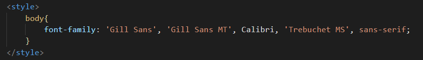

Trabalhando com fontes
- Para inserirmos uma fonte, utilizamos a tag Font-Family, conforme print abaixo.
- Importante utilizarmos a tag com safe combinations que são as mais de uma fonte informada no código, pois alguns dispositivos, principalmente celulares, não conseguem identificar uma fonte específica, quando isso acontece ele tenta lê a próxima fonte que inserimos.
- O VS Code já da sugestões, porém podemos pesquisar no google também outras alternativas de safe combinations, porque eles precisam combinar e não fugir do padrão da primeira fonte
